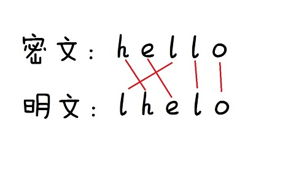

Problem A（小埋与NOIP）：
此题其实是计算加权平均数，模拟公式过程再输出最大值即可。
$\bar{x}=\dfrac{x_1w_1+x_2w_2+…+x_nw_n}{w_1+w_2+…+w_n}$
附标程：
1 |
|
Problem B（小埋与数羊）：
裸DP题，可以通过求从第一行出发后每个点所能得出的最大值，转移方程为：q[a][b]=max(q[a][b],q[a-1][c]+_map[a][b]);
附标程（效率还是比较低，没压缩）：
1 |
|
Problem C（小埋与二分法）：
又是字符串，不过这次复杂了很多，但脑洞就没有上次的Problem C（小埋与TSF的密信）那么大，可能很多人提交之后都会怀疑数据有问题，那你就错了，其实你们题目可能漏了一点没有看，那就是：
输入数据是密文！
本题的题意其实是让你按照加密过程的逆过程来解密，可能有人会连加密过程都看不懂，那我就图解一下吧：

再简单点说其实就是先序遍历转中序遍历
附标程：
1 |
|